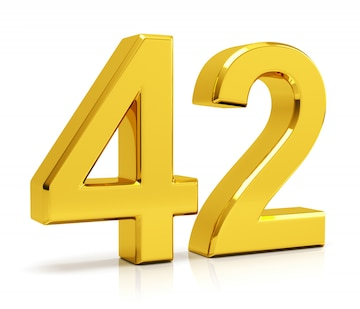

Наша Історія

Філософія ZAZcustom
ZAZcustom — це не просто одяг. Це маніфест індивідуальності, втілений у тканині. Ми створюємо речі для тих, хто не боїться виділятися, хто цінує ручну роботу та глибокий сенс. Наш стиль поєднує в собі брутальність міських вулиць та містику давніх символів, створюючи унікальний візуальний код.
Якість у кожній деталі
Ми одержимі якістю. Кожна футболка, худі чи аксесуар проходить через наші руки. Ми використовуємо тільки щільну 100% бавовну, яка витримує десятки прань, та наносимо принти методом шовкографії. Це гарантує, що малюнок не потріскається і не втратить колір, залишаючись таким же яскравим, як і ваша особистість.
Перейти до каталогу